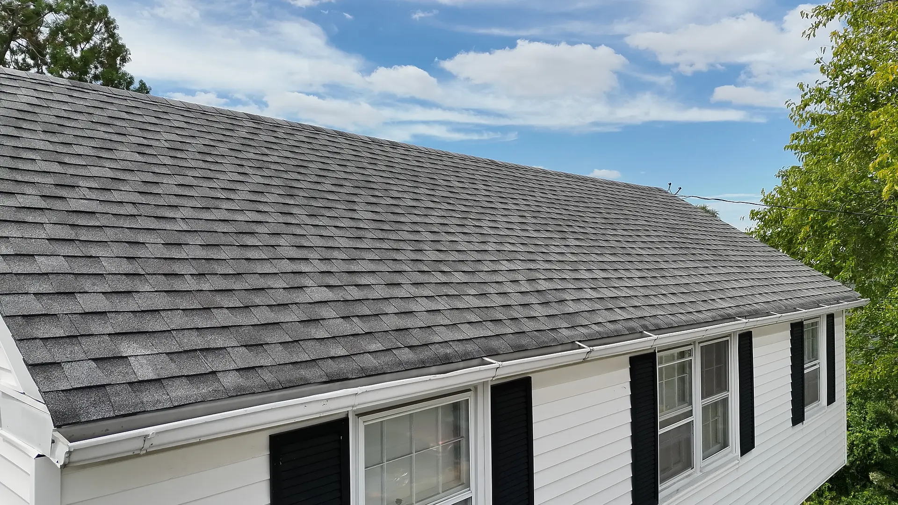
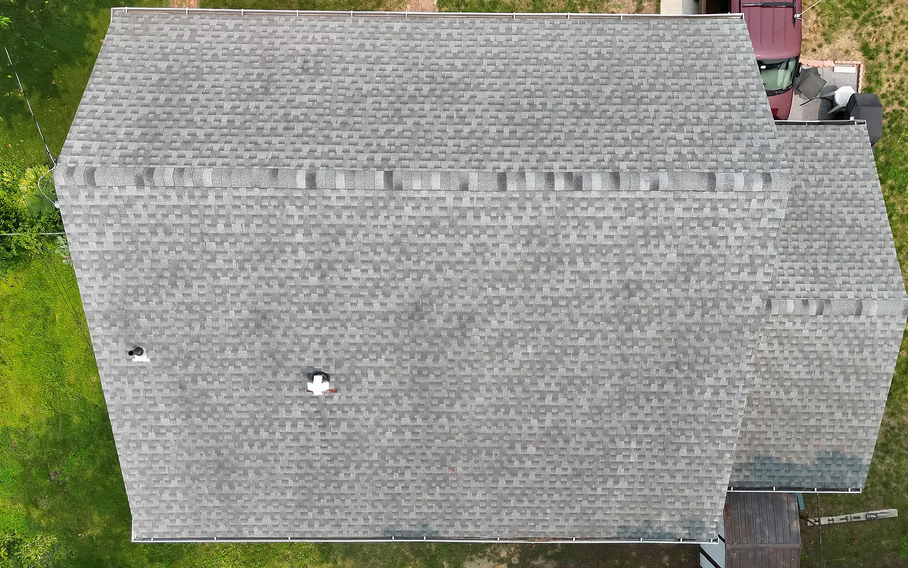
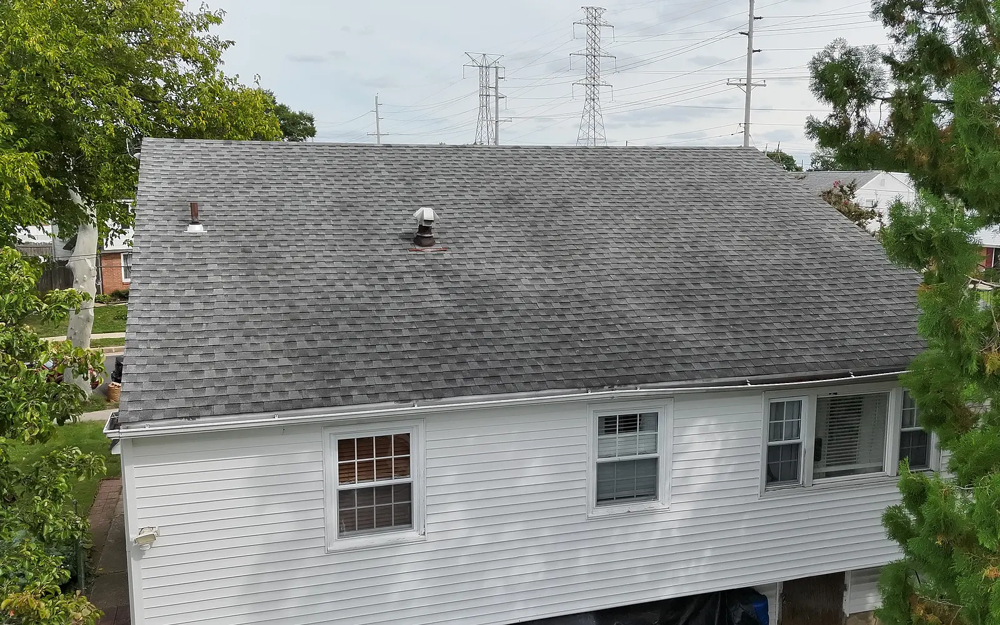
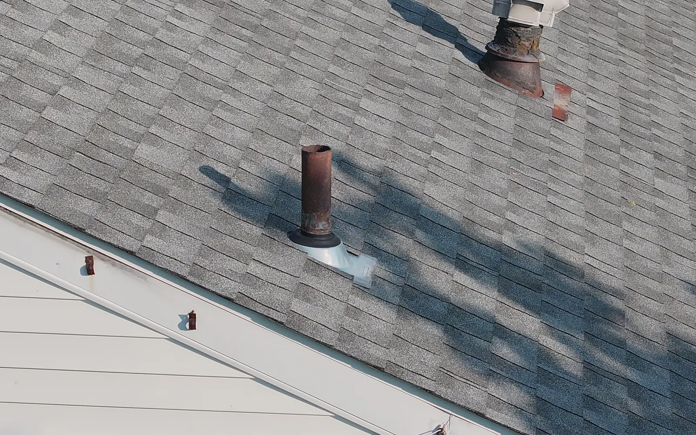
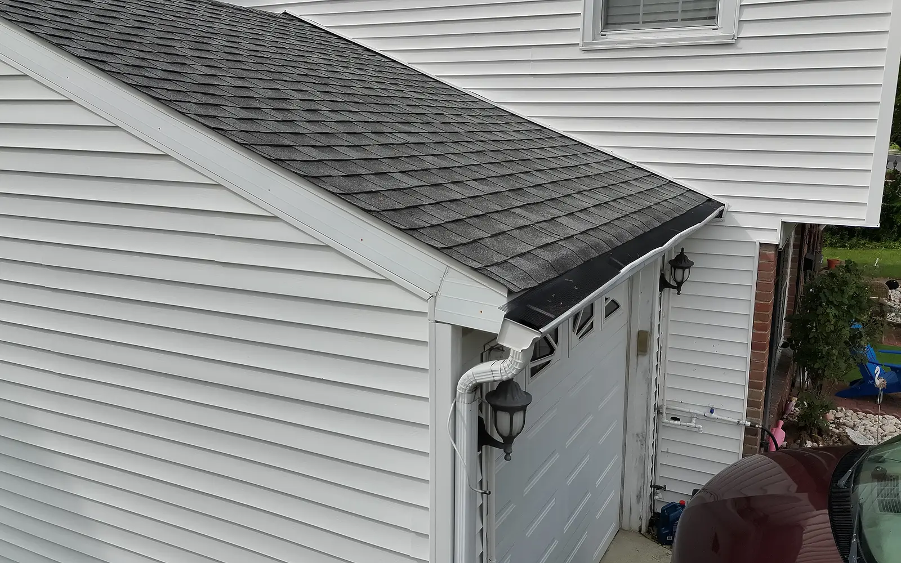
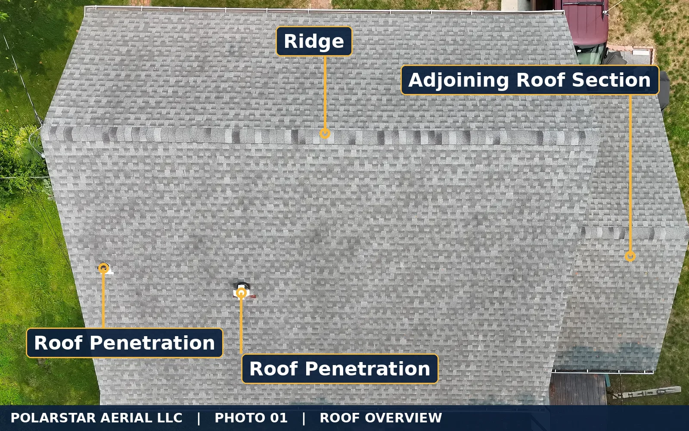
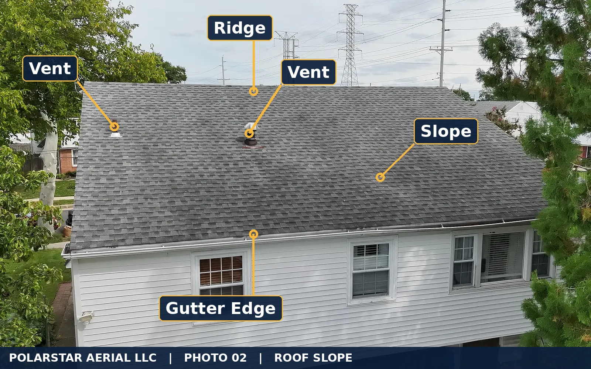
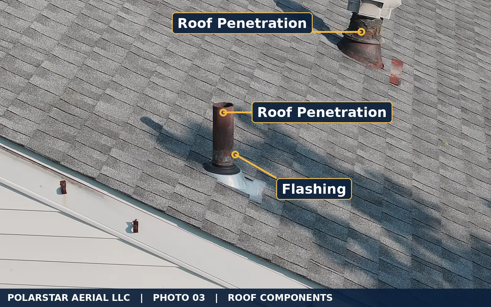

Polarstar Aerial provides organized aerial photo documentation for roofers, contractors, property professionals, and adjusters throughout South Jersey.
Or call (856) 237 7980

Overview, individual slopes, roof components, drainage edges, and exterior elevations, organized for fast review.




Residential Roof Documentation, Atlantic County, New Jersey. Demonstration flight showing roof slopes, drainage edges, and roof components.
Every assignment is organized and labeled around your scope, so the requested areas are easy to review, share, and keep on file.



Sample images are for visual documentation only and do not constitute an engineering opinion, insurance determination, repair estimate, or diagnosis of damage. Tap any image to enlarge.
Serving Atlantic City, Ventnor, Margate, Brigantine, Egg Harbor Township, Galloway, Absecon, Pleasantville, Northfield, Linwood, Somers Point, Ocean City, and Cape May County.
We provide visual documentation only. We don't diagnose damage, determine cause, estimate repairs, certify roofs, or give insurance or coverage opinions. Those calls belong to your licensed professionals.
No. We capture and organize the evidence. Your roofer, adjuster, or engineer makes the professional call.
No. Everything is captured from the air and from the ground.
Usually within one to two days of receiving the address, weather and airspace permitting. Photos usually arrive the next business day after the flight.
Yes. We carry $1 million in aviation liability coverage and can send a certificate of insurance, including additional insured when requested.
We don't fly in rain, high wind, or low visibility. We reschedule to the next safe window and tell you right away.
Much of Atlantic City is controlled airspace. We get FAA authorization before every flight and tell you before scheduling if a location isn't allowed.
Yes, on request. Thermal images show surface temperature differences. They are a lead for your own investigation, not a diagnosis of moisture or leaks.
Our focus is contractors, adjusters, and property professionals.